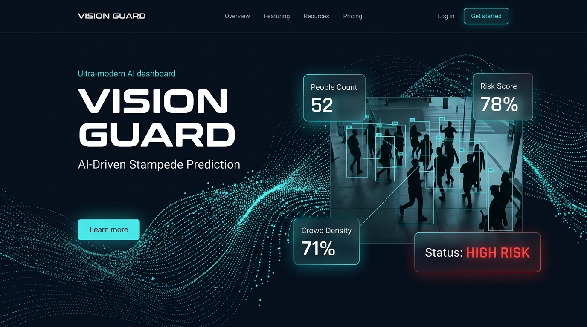

Real-time intelligent crowd monitoring system using Deep Learning and Optical Flow to detect, analyze, and prevent life-threatening crowd behaviors before they escalate.

Comprehensive monitoring pipeline powered by YOLOv8 and Farneback Optical Flow.
Detect and count people accurately in crowded environments using YOLOv8n, providing per-frame tracking and real-time occupancy metrics.
Estimate crowd density levels (LOW, MEDIUM, HIGH, CRITICAL) based on detected crowd size relative to zone capacity.
Analyze crowd movement using Optical Flow to identify panic movement, turbulence, and sudden gathering or dispersal.
Predict potential stampede risks using a multi-modal weighted risk engine. Generates real-time alerts with evidence snapshots.
A glimpse into the real-time data processing engine.
> [SYS] Initiating YOLOv8n inference...
> [SYS] Optical flow Farneback initialized.